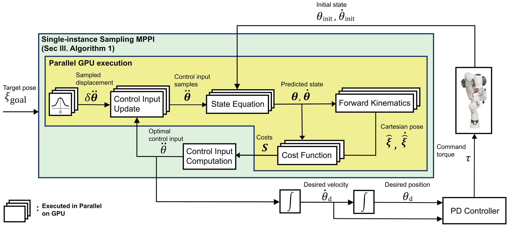
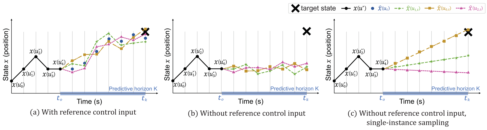
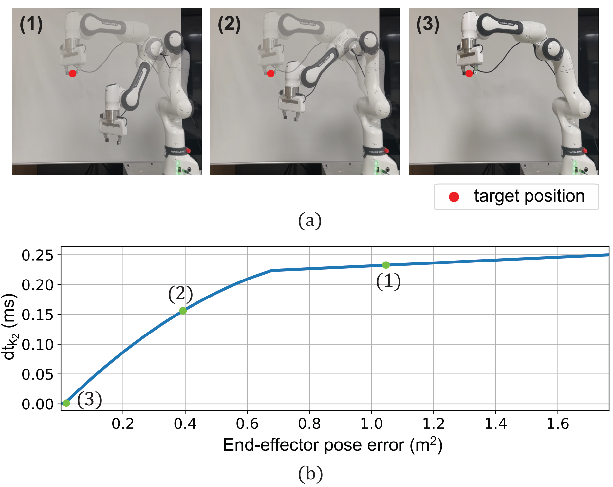

18× faster computation (0.255 ms vs. 4.62 ms)
12× more accurate pose tracking (L2-norm: 3.09×10⁻² vs. 3.80×10⁻¹)
STORM fails to converge orientation error to zero; proposed method fully converges.
This study presents a model predictive path integral (MPPI) method capable of conducting high-frequency real-time model predictive control (MPC) for robot manipulators. Real-time MPC-based manipulation holds significant potential for controlling an end-effector precisely and reactively while satisfying various constraints in dynamic environments.
However, the optimization under a complex robot model and various constraints imposes a heavy computational burden, hindering the realization of high-frequency updates. To address this challenge, we propose a single-instance sampling-based MPPI algorithm and dynamic time horizon to significantly reduce the computational burden while enhancing control performance.
The performance and efficacy of the proposed method are verified through experiments conducted on a 7-degree-of-freedom robotic arm (Franka FR3), along with comparative simulations and analysis against STORM, cuRobo, and FDDP.

Overview of the proposed MPPI-based task-space control framework. Yellow blocks execute in parallel on GPU.
We propose a novel sampling strategy where a constant change in control input (δu) is sampled once and applied throughout the entire predictive horizon for each trajectory.
This approach differs fundamentally from conventional MPPI, which samples different control perturbations at each time step, requiring nested for-loop computations.
Key advantages:

We propose an adaptive time horizon that automatically adjusts its length based on the current distance to the goal.
The prediction horizon is divided into two segments using binary segmentation: a short fixed-step segment (dt₁ = 0.001 s) for near-future precision, and a variable-step segment (dt₂) for long-range exploration.
Key advantages:

Validated on a 7-DoF Franka FR3 robotic arm with real-world experiments and MuJoCo simulations.
In point-to-point real-world experiments, the proposed method achieved:
Sample generation and state prediction together take only 3% of total computation time.
Point-to-point control: position & orientation converging to 6-DoF target.
Under a 5π/3 rad yaw rotation command, joint 7 reaches its position limit and maintains that position. Joints 1 and 2 then generate larger movements to continue tracking the target orientation without violating joint constraints.
When the target is set outside the reachable workspace, the robot moves to the closest feasible position while the manipulability-based cost keeps it above 0.02 — ensuring no loss of controllability.
Using a neural network-based collision cost, the robot detects and avoids self-collision in real time, achieving the closest feasible posture to the target without explicit trajectory planning.
18× faster computation (0.255 ms vs. 4.62 ms)
12× more accurate pose tracking (L2-norm: 3.09×10⁻² vs. 3.80×10⁻¹)
STORM fails to converge orientation error to zero; proposed method fully converges.
17× faster computation (0.984 ms vs. 17.14 ms)
Comparable tracking accuracy with longer prediction horizon (up to 2.55 s vs. 0.9 s for FDDP).
Position error: 0.005 m (proposed) vs. 0.035 m (FDDP).
1.46× faster computation (0.255 ms vs. 0.372 ms)
Single-instance sampling requires only one sample point per rollout, vs. at least two nodes for spline interpolation.
Comparison of position and orientation errors: proposed method vs. STORM (default, N=500 K=30) vs. STORM (same parameters, N=128 K=64).
Sequential target tracking across 9 poses including out-of-reach and self-collision targets (simulation).
The proposed method and STORM handle out-of-reach / self-collision targets gracefully. cuRobo fails with "IK solve fail" and cannot respond to dynamically updated targets.
Real-world experiment on 7-DoF Franka FR3.
17× faster computation
0.984 ms (proposed) vs. 17.14 ms (FDDP)
Better position accuracy
0.005 m (proposed) vs. 0.035 m (FDDP)
Longer prediction horizon
up to 2.55 s (proposed) vs. 0.9 s (FDDP)
@article{kim2025single,
author = {Kim, Dongwhan and Im, Euncheol and Kim, Yujin and Lim, Myotaeg and Lee, Yisoo},
title = {Single-Instance Sampling for Computationally Efficient and Accurate Real-Time Task Space {MPPI} Control},
journal = {IEEE Transactions on Robotics},
volume = {41},
pages = {6327--6344},
year = {2025},
doi = {10.1109/TRO.2025.3626660},
}